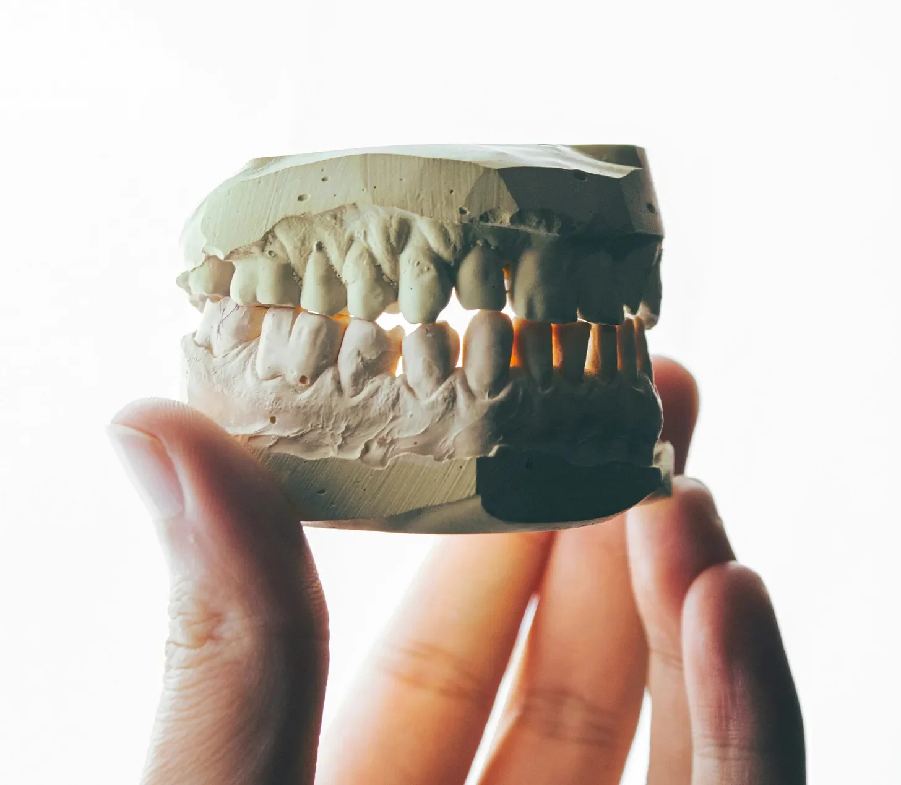

그녀는 “제발"이라고 흐느꼈다. 녹슨 그네가 동정하듯 삐걱거렸고, 그녀는 손목을 묶은 덕트 테이프에 저항하며 몸부림쳤다. 그것은 이사할 때 냉장고를 고정하는 데 쓰는 두꺼운 산업용 테이프였고, 무의미한 몸부림을 칠 때마다 피부를 파고들었다. 그녀의 맨 다리는 소름이 돋고 흙으로 얼룩져 있었으며, 듬성듬성한 잔디 위에 한 뼘 정도 매달려 있었다.
["Please,” she whimpered, the rusty swingset groaning in sympathy as she strained against the duct tape binding her wrists. It was that thick, industrial kind, the kind movers used to secure refrigerators, and it bit into her skin with every futile tug. Her bare legs, goose bumped and smeared with dirt, dangled a foot above the patchy grass.]
버려진 놀이터의 황량한 공간 건너편에서, 그는 시소 위에 웅크리고 앉아 있었다. 멍든 듯한 황혼의 하늘을 배경으로 한 구부정한 실루엣이었다. 그는 뭔가를 흥얼거리고 있었는데, 그녀가 어렴풋이 기억하는 의치 크림 광고 음악이었다. 가끔 흥얼거림이 멈추고 그녀의 속을 뒤틀리게 하는 축축한 쩝쩝 소리로 바뀌곤 했다.
[Across the scrubby expanse of the abandoned playground, he sat perched on a seesaw, a hunched silhouette against the bruised twilight sky. He was humming something, a tune she vaguely recognized from a commercial for denture cream. Every now and then, the humming would stop, replaced by a wet, smacking sound that made her stomach clench.]
그는 자신을 데일이라고 소개했지만, 그녀는 그게 그의 진짜 이름이 아닐 거라고 의심했다. 데일은 마치 여러 부품을 조립한 듯한 얼굴을 가지고 있었다. 그의 옆모습을 지배하는 불룩한 코, 너무 작고 가까이 붙은 눈, 소심한 파도처럼 뒤로 물러난 턱. 그는 주름진 카키색 바지에 넣은 얼룩진 폴로 셔츠를 입고 있었는데, 쿠폰을 매우 중요하게 여기는 사람의 유니폼 같았다.
[He’d introduced himself as Dale, though she suspected that wasn’t his real name. Dale had the kind of face that seemed assembled from spare parts – a bulbous nose that dominated his profile, eyes too small and close-set, a chin that receded like a timid wave. He’d been wearing a stained polo shirt tucked into pleated khakis, the uniform of a man who took coupons very seriously.]
“데일,” 그녀는 다시 시도했다. 목소리는 메마른 쉰 소리였다. “제발, 우리 그냥… 이것에 대해 얘기 좀 할 수 있을까요?”
[“Dale,” she tried again, her voice a dry rasp. “Please, can we just… talk about this?”]
흥얼거림이 더 커졌다. 그는 시소에서 앞뒤로 천천히 흔들거렸는데, 그 의도적인 동작이 만족스러워하는 유아를 연상시켰다. 다만 주스 상자 대신 그의 손에는 집게가 들려 있었고, 그 날카로운 부분이 사그라지는 빛 속에서 번쩍였다. 그리고 행복한 옹알이 대신 그는 그 끔찍한 쩝쩝거리는 소리를 냈다.
[The humming intensified. He rocked back and forth on the seesaw, a slow, deliberate motion that made her think of a contented toddler. Except, instead of a juice box, he held a pair of pliers in his hand, the jaws glinting in the fading light. And instead of a happy gurgle, he emitted those awful smacking sounds.]
그녀는 도서관의 자기계발 섹션에서 그를 만났다. 그녀는 슬픔 극복에 관한 책들을 훑어보고 있었다 - ‘상실과 함께 살아가기’, '공허 속에서 의미 찾기’ - 늘 그렇듯 밝은 주제의 책들이었다. 그는 오디오북 근처에서 서성이고 있었고, '영혼을 위한 닭고기 수프’ 책들을 가슴에 안고 있었다. 그는 꽤 무해해 보였고, 어쩌면 조금 길을 잃은 것 같기도 했다. 그녀는 그에게 조심스럽게 미소를 지어 보였다. 실존적 고뇌로 가득한 형광등 아래 통로에서 서로의 취약함을 공유하는 제스처였다. 그는 미소로 화답했고, 그리고는 놀라울 정도로 빠르게 그녀의 입을 손으로 막고 주차장으로 끌고 갔다.
[She’d met him at the library, in the self-help section. She was browsing titles on overcoming grief – Living with Loss, Finding Meaning in the Void – the usual cheery fare. He’d been lingering by the audiobooks, a stack of Chicken Soup for the Soul clutched to his chest. He’d seemed harmless enough, a little lost, maybe. She’d offered him a tentative smile, a gesture of shared vulnerability in that fluorescent-lit aisle of existential angst. He’d returned the smile, and then, with surprising speed, clamped a hand over her mouth and dragged her out to the parking lot.]
이제 그녀는 여기 있다. 도시의 잊혀진 구석에 있는 그네에 묶인 채로, 데일은… 글쎄, 그녀는 데일이 정확히 무엇을 하고 있는지 알 수 없었다. 하지만 그것은 집게와 관련이 있었고, 리듬감 있는 우두둑 소리와 함께, 그의 발쪽에 있는 작은 비닐봉지가 하얗고… 뾰족한 무언가로 채워지고 있었다.
[Now, here she was, bound to a swingset in a forgotten corner of the city, while Dale… well, she didn’t quite know what Dale was doing. But it involved those pliers, and the rhythmic crunching sounds, and the small plastic bag at his feet that seemed to be filling up with something white and… jagged.]
어지러움이 그녀를 덮쳤다. 그녀는 눈을 꼭 감았다. 그의 모습과 소리, 녹슨 냄새와 축축한 흙 냄새, 그리고 희미하면서도 달콤한 금속성인 다른 무언가의 냄새를 차단하려 했다. 그 냄새는 그녀를 구역질나게 했다. 그녀는 남편 마크를 떠올렸다. 그의 부드러운 미소, 그녀가 완전히 심술궂어도 “햇살"이라고 부르던 방식을. 이제는 사라진 마크, 공허에 삼켜져 그녀를 데일들로 가득 찬 세상에 표류하게 만든 마크를.
[A wave of dizziness washed over her. She squeezed her eyes shut, trying to block out the sight of him, the sounds, the smell of rust and damp earth and something else, something faintly sweet and metallic that made her gag. She thought of her husband, Mark, his gentle smile, the way he used to call her "sunshine” even when she was being a total grump. Mark, who was gone now, swallowed by the void, leaving her adrift in a world that suddenly seemed populated by Dales.]
그녀가 눈을 떴을 때, 그는 그녀 앞에 서 있었고 손에는 집게가 달랑거렸다. 그는 그녀의 입술에 묻은 침방울과 작은 눈에 서린 광기를 볼 수 있을 만큼 가까이 있었다. 그는 손을 뻗어 그녀의 귀 뒤로 삐져나온 머리카락을 부드럽게 넣어주었다.
[When she opened her eyes, he was standing in front of her, pliers dangling from his hand. He was close enough that she could see the flecks of spittle on his lips, the manic gleam in his tiny eyes. He reached out and gently tucked a stray strand of hair behind her ear.]
“당신은 아름다운 치아를 가졌어요,” 그가 말했다. 그의 목소리는 부드럽고 숨가쁜 속삭임이었다. “정말 아름다워요.”
[“You have beautiful teeth,” he said, his voice a soft, breathy whisper. “Just beautiful.”]
그가 처음 뽑은 왼쪽 앞니가 가장 끔찍했다. 고통 자체는 놀랍게도 둔했고, 턱을 통해 퍼지는 둔한 욱신거림이었다. 아니, 가장 끔찍한 건 소리였다 - 집게가 치아를 움켜쥐는 소름 끼치는 우두둑 소리, 그가 비틀고 당길 때의 끽끽거리는 저항, 잇몸에서 마지막으로 뽑혀 나올 때의 축축한 '팝’ 소리. 그리고 잔디 위에 놓인 그것을 보는 것, 그녀의 무력함을 보여주는 작고 진주 같은 기념물.
[The first one he’d taken, the left incisor, had been the worst. Not the pain itself, which was surprisingly muted, a dull throbbing ache that radiated through her jaw. No, it was the sound – the sickening crunch as the pliers gripped the tooth, the grating resistance as he twisted and pulled, the final, wet pop as it tore free from her gum. And the sight of it, lying there on the grass, a tiny, pearly monument to her own helplessness.]
데일은 꼼꼼했다. 거의 부드럽다고 할 정도로. 그는 젖은 천으로 피를 닦아내며 사과의 말을 중얼거리고 그녀의 용기를 칭찬했다. 그리고 나서 다른 치아를 선택하고, 그 끔찍한 과정이 다시 시작되었다.
[He’d been meticulous, Dale. Almost gentle. He’d wipe away the blood with a damp cloth, murmuring apologies, praising her bravery. Then he’d select another tooth, and the whole gruesome process would begin again.]
그녀는 다섯 번째 이후로 셈을 잃었다. 시간이 왜곡되고 늘어난 것 같았다. 각각의 발치는 영원과도 같았고, 그 사이의 간격은 공포와 메스꺼움의 흐릿한 안개였다. 그의 발밑에 놓인 가방은 점점 불러오고 있었고, 그 안의 하얀 파편들이 달빛을 받아 섬뜩한 색종이처럼 반짝였다.
[She’d lost count after the fifth. Time seemed to warp and stretch, each extraction an eternity, the intervals between them a blurry haze of fear and nausea. The bag at his feet was growing plump, the white fragments within it catching the moonlight like macabre confetti.]